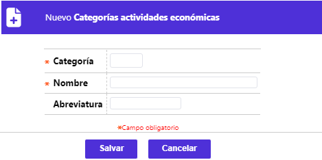
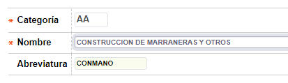
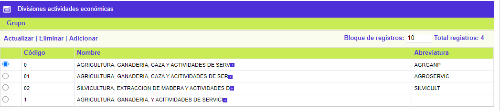
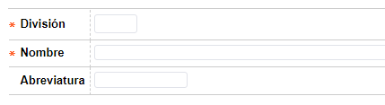
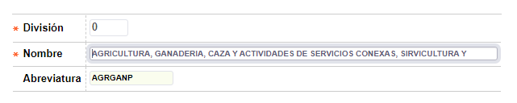
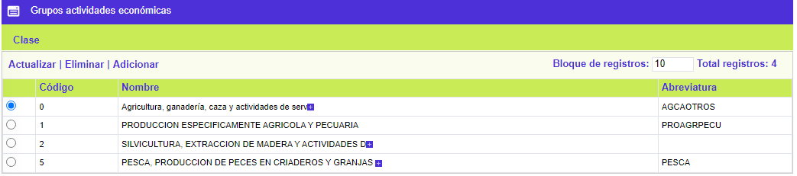
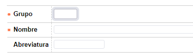
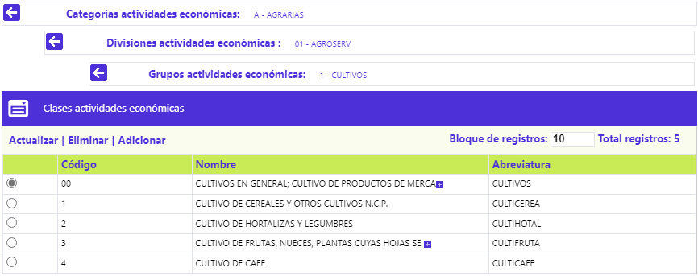
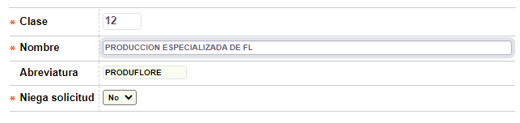

Actividades Economicas
Mediante esta función se habilita la consulta y mantenimiento de la tabla en la cual se almacenan las descripciones de las diferentes actividades económicas, que pueden ser desempeñadas por los clientes, y que se asocian a él dentro del proceso de ingreso de la solicitud; esta tabla se encuentra poblada inicialmente con la clasificación del Código Internacional Industrial Uniforme (C.I.I.U.), elaborada por las Naciones Unidas, que se desagrega o descompone en cuatro niveles. Si la corporación o entidad lo requiere, puede rebautizar o modificar el título o nombre de las pestañas y/o poblar la tabla con la codificación y descripción válida o vigente para estas, comenzando por la izquierda, teniendo presente que la(s) pestaña(s) que no utilice seguirán apareciendo.
Sumado al vínculo División de la parte superior, el formulario contiene las opciones Actualizar, Eliminar y Adicionar.
Adicionar: Si el usuario invoca la opción Adicionar se despliega el siguiente formulario:

Categoría |
Campo alfanumérico de dos dígitos, obligatorio, que corresponde al código asignado a cada una de las categorías del código C.I.I.U. |
|
Nombre |
En este campo alfanumérico de 80 posiciones, obligatorio, se registra el nombre asociado al código de cada categoría. |
|
Abreviatura |
Campo alfanumérico de 10 posiciones, no obligatorio, en el cual se condensa el nombre asociado al código de cada categoría, para ser utilizado en los reportes o consultas donde sea necesario. |
Actualizar: Si el usuario invoca la opción Actualizar se despliega un nuevo formulario en el cual los únicos campos modificables son: Nombre, Abreviatura.

División
Al invocar la vínculo División, el sistema muestra el siguiente formulario:

Las Divisiones son el segundo nivel de la clasificación del C.I.I.U. correspondiente a las divisiones que conforman cada categoría. En la parte superior del bloque aparece un campo que identifica la categoría a la que pertenece la división.
Sumado al vínculo Grupo de la parte superior, el formulario contiene las opciones Actualizar, Eliminar y Adicionar.
Adicionar: Si el usuario invoca la opción Adicionar se despliega el siguiente formulario:

|
División |
Campo alfanumérico de dos dígitos, obligatorio, que corresponde al código asignado a cada una de las divisiones. |
|
Nombre |
En este campo alfanumérico de 80 posiciones, obligatorio, se registra el nombre asociado al código de cada división. |
|
Abreviatura |
Campo alfanumérico de 10 posiciones, en el cual se condensa el nombre asociado al código de cada división, para ser utilizado en los reportes o consultas donde sea necesario. |
Actualizar: Si el usuario invoca la opción Actualizar se despliega un nuevo formulario en el cual los únicos campos modificables son: Nombre, Abreviatura.

Grupos
Al invocar la vínculo Grupo, el sistema muestra el siguiente formulario:

Los Grupos son el tercer nivel de la clasificación del C.I.I.U. correspondiente a los grupos que conforman cada división. En la parte superior del bloque aparece un campo que identifica la categoría y la división a la que pertenece el grupo.
Sumado al vínculo Clase de la parte superior, el formulario contiene las opciones Actualizar, Eliminar y Adicionar.
Adicionar: Si el usuario invoca la opción Adicionar se despliega el siguiente formulario:

|
Grupo |
Campo alfanumérico de dos dígitos, obligatorio, que corresponde al código asignado a cada uno de los grupos. |
|
Nombre |
En este campo alfanumérico de 80 posiciones, obligatorio, se registra el nombre asociado al código de cada grupo. |
|
Abreviatura |
Campo alfanumérico de 10 posiciones, no obligatorio, en el cual se condensa el nombre asociado al código de cada grupo, para ser utilizado en los reportes o consultas donde sea necesario. |
Actualizar: Si el usuario invoca la opción Actualizar se despliega un nuevo formulario en el cual los únicos campos modificables son: Nombre, Abreviatura.
Clases
Al invocar la vínculo Clases, el sistema muestra el siguiente formulario:

Las Clases con el cuarto y último nivel de la clasificación del C.I.I.U. correspondiente a las clases que conforman cada grupo. En la parte superior del bloque aparece un campo que identifica la categoría, división y grupo a los que pertenece la clase. A través de este tab la entidad puede determinar abstenerse de otorgar crédito a aquellas personas naturales o jurídicas que desempeñen ciertas actividades económicas previamente marcadas como que debe negarse.
El formulario contiene las opciones Actualizar, Eliminar y Adicionar.
Adicionar: Si el usuario invoca la opción Adicionar se despliega el siguiente formulario:

|
Clase |
Campo alfanumérico de dos dígitos, obligatorio, que corresponde al código asignado a cada una de las clases. |
|
Nombre |
En este campo alfanumérico de 80 posiciones, obligatorio, se registra el nombre asociado al código de cada clase. |
|
Abreviatura |
Campo alfanumérico de 10 posiciones, no obligatorio, en el cual se condensa el nombre asociado al código de cada clase, para ser utilizado en los reportes o consultas donde sea necesario. |
|
Niega solicitud |
En este campo la entidad señala todas y cada una de las actividades económicas para las cuales se abstiene de otorgarles crédito, información que será tomada en cuenta en el proceso de Solicitudes. |
Actualizar: Si el usuario invoca la opción Actualizar se despliega un nuevo formulario en el cual los únicos campos modificables son: Nombre, Abreviatura y Niega solicitud.
